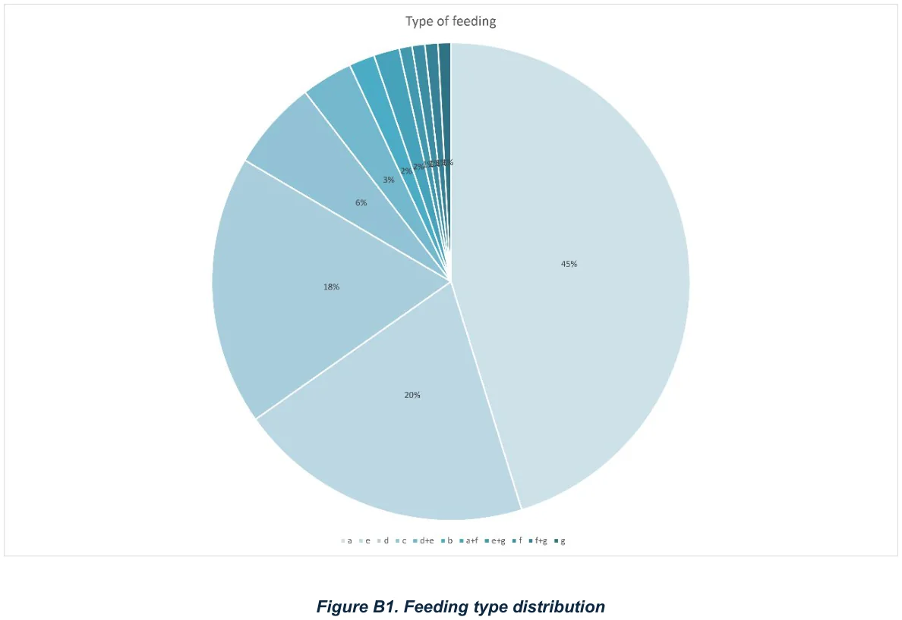
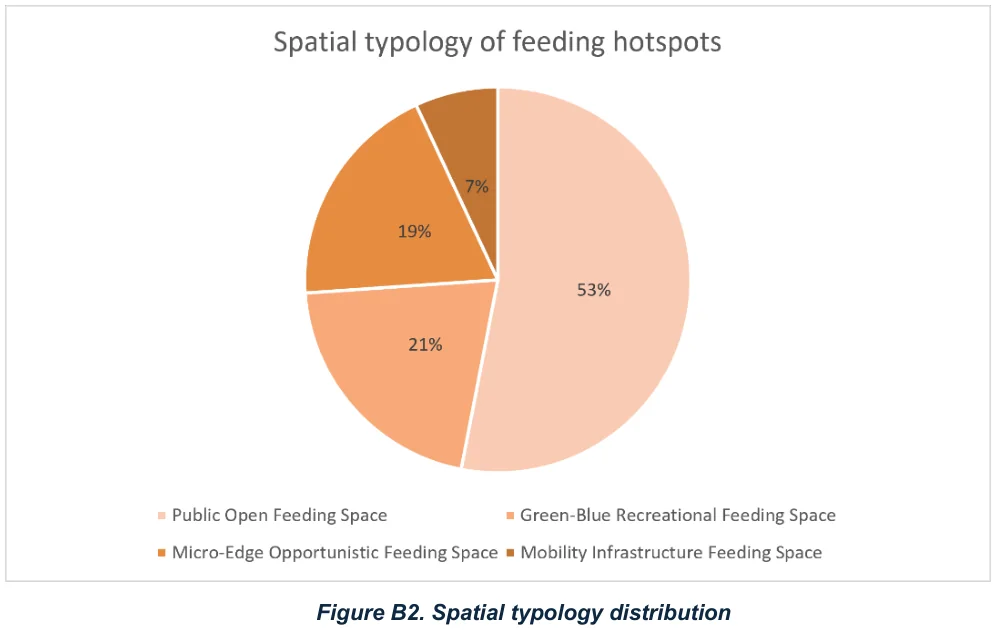
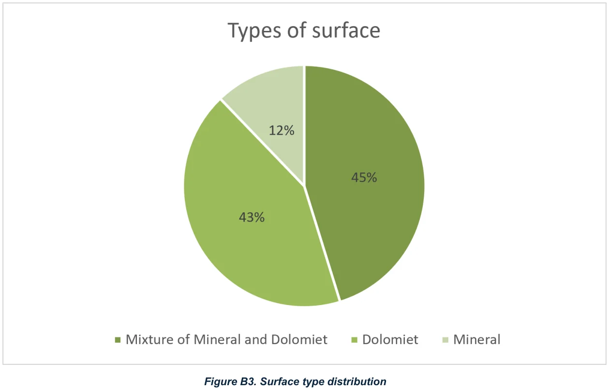
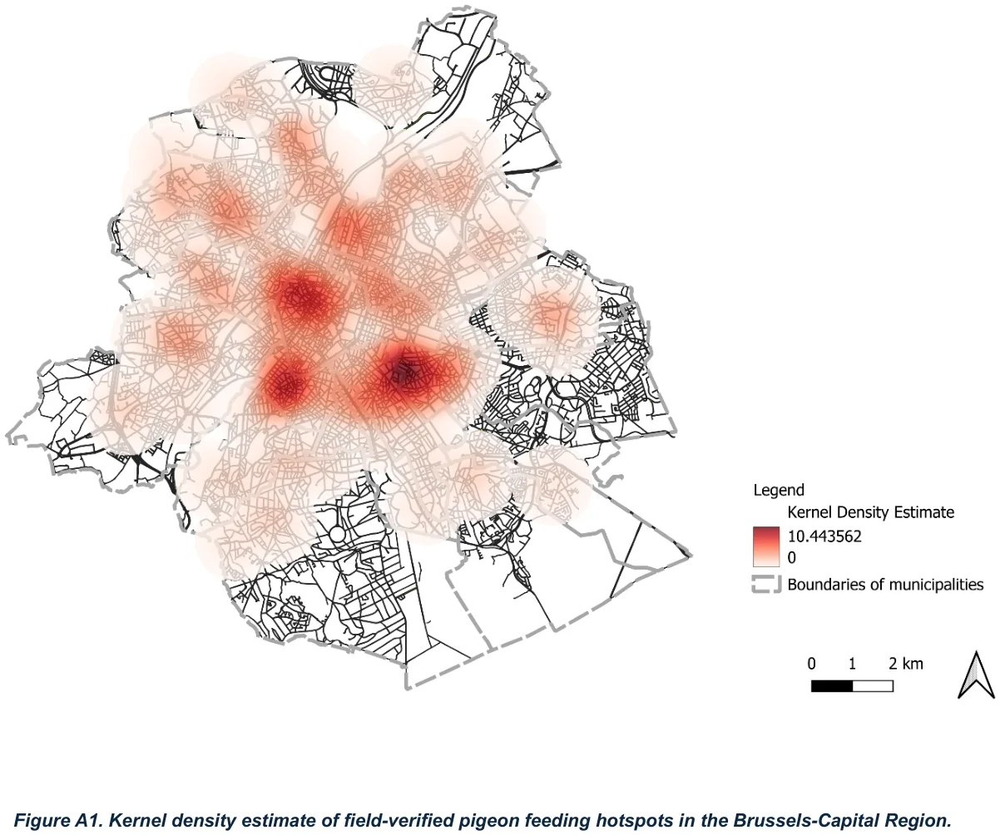
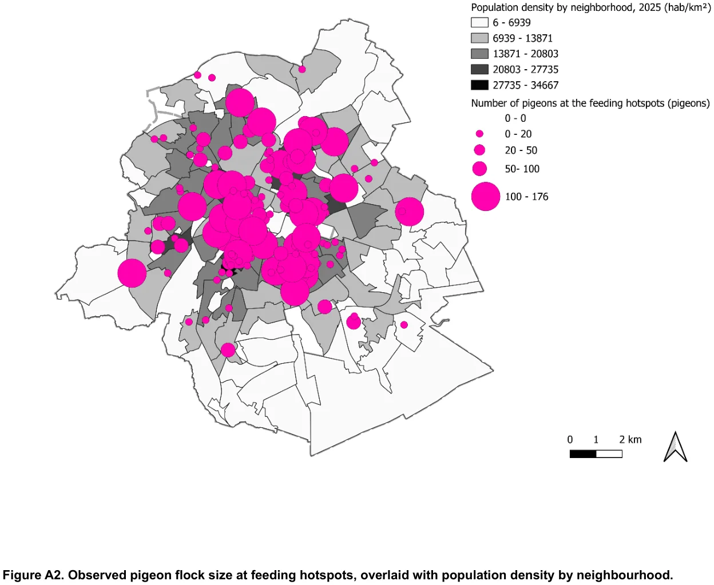
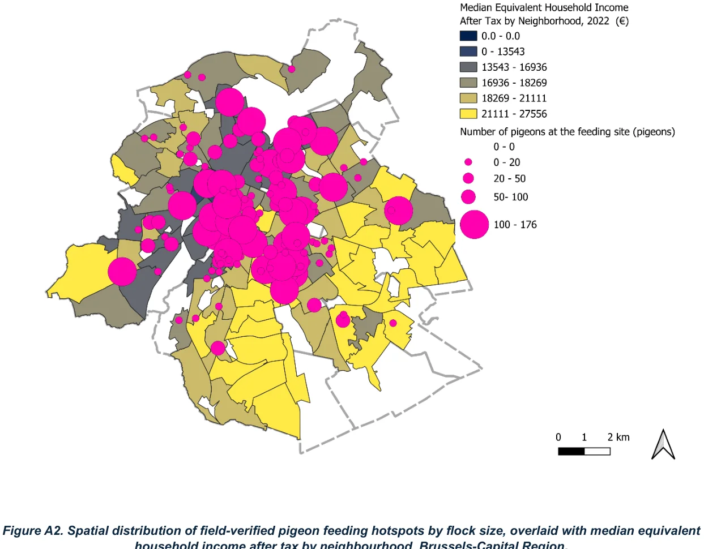

Fieldwork, spatial analysis and urban human–animal relations
Research intern · Université de Namur (B-POHOW)Mar – Jun 2026Supervisor: Dr. Ciska De RuyverOne Health · One Welfare
175+candidate locations screened
115active feeding hotspots verified
1,503site photographs and videos (17 GB)
7feeding-type categories coded
The framing: One Health and One Welfare
The B-POHOW project at the University of Namur studies pigeon feeding hotspots in the Brussels-Capital Region through the combined lenses of One Health and One Welfare. Rather than treating pigeons only as a nuisance or a public-health concern, the project examines how human practices, animal welfare, public-space management and urban environmental conditions interrelate.
Feeding hotspots are not randomly distributed. They are shaped by public-space design, hard or soft surfaces, food waste, informal care practices, municipal management strategies and residents' daily routines. In that sense pigeons function as indicators of broader urban conditions.
My role: turning municipal leads into a verifiable database
My task in the first phase of the project was to establish a reliable, field-verified spatial database of feeding hotspots to support the later stages — veterinary observation, sociological analysis and discussion with public authorities. The starting point was a preliminary list of suspected sites reported by municipal authorities, field partners and the research team's prior knowledge. Those inputs were uneven: some entries were precise and recent, others vague, outdated, duplicated, or based mainly on residents' complaints rather than direct observation.
Step 1 — systematic fieldwork, mainly by bicycle
Carried out extensive fieldwork across the Brussels-Capital Region, mainly by bicycle — a mode that gave access to dense public spaces and allowed flexible movement between municipalities at a human scale.
Applied a standardised observation protocol at every candidate site, recording pigeon presence, whether feeding was observed, approximate flock size, feeding type, spatial typology, surface materials, perching or nesting opportunities, fieldwork time and counting method.
Collected 17 GB of visual material — 1,503 photographs and videos — documenting the sites first-hand.
Coded fieldwork status in three categories: 1 site visited but no pigeons found, 2 pigeons found but no feeding observed, 3 pigeons found and feeding observed.
From more than 175 candidate locations, 115 sites were classified as active feeding hotspots (code 3). The gap between reported and verified sites is itself a finding: administrative knowledge of animal presence differs from direct ecological observation.
Step 2 — cleaning and coding a hybrid phenomenon
Cleaned and standardised a dataset assembled from multiple sources in two languages (French and Dutch) with different naming conventions, typologies and levels of precision.
Classified feeding into seven categories: intentional feeding, authorised management feeding, mixed intentional and unintentional feeding, contraceptive grain combined with other sources, commercial-food proximity foraging, mixed self-foraging, and anthropogenic waste foraging.
Many sites did not fit a single category — some combined contraceptive feeding with bread provided by residents, others combined commercial food waste with direct intentional feeding. Coding therefore required repeated discussion with my supervisor, and data cleaning became an interpretive process rather than a purely technical one.

Fig. 1 — Feeding-type distribution across the field-verified active hotspots (codes a–g). Source: internship report.

Fig. 2 — Spatial typology of feeding hotspots: public open, green-blue recreational, micro-edge opportunistic and mobility-infrastructure spaces. Source: internship report.

Fig. 3 — Surface types recorded at active hotspots: mineral and mixed mineral–dolomite surfaces dominate, linking feeding sites to built and paved environments rather than green space alone. Source: internship report.
Step 3 — GIS mapping and spatial analysis
Produced a hotspot distribution map showing the regional spread of verified active feeding hotspots.
Built a kernel-density estimate; the strongest concentrations appear in dense, central and inner-ring urban areas, where street networks, commercial activity, transport nodes, squares and mixed-use public space converge.
Mapped flock size as proportional circles, from small groups up to flocks exceeding 100 individuals.
Produced exploratory socio-economic overlays — flock size against neighbourhood population density (2025) and against median equivalent household income after tax (2022).

Fig. 4 — Kernel density estimate of field-verified feeding hotspots, Brussels-Capital Region. Municipal boundaries shown for reference only; exact locations are not disclosed. Source: internship report.

Fig. 5 — Observed flock size at feeding hotspots overlaid with neighbourhood population density (2025).

Fig. 6 — Flock size overlaid with median equivalent household income after tax by neighbourhood (2022).
What the data showed
Unauthorised intentional feeding was the largest single category: 52 sites, roughly 45.2% of the 115 active hotspots — informal human feeding remains a major component of pigeon urban ecology.
Food-waste-related foraging near restaurants, food shops, markets and chip shops accounted for 23 sites (20.0%); counting mixed categories it rises to 29 sites (about 25.2%).
Contraceptive feeding was identified at 25 active hotspots (21.7%) — 21 coded as type d and 4 as d+e — and in most cases appeared alongside other food sources rather than as an isolated intervention.
Hotspots sat overwhelmingly in urbanised public space — squares and plazas, spaces adjacent to transport, the surroundings of religious buildings, parks, street gardens and building entrances — and a significant share were on hard or mixed surfaces such as textured paving, dolomite, or paving combined with bare soil and grass.
Taken together, the distribution is shaped less by autonomous foraging than by a combination of human practices, urban infrastructure and mixed feeding ecologies.
Stakeholder engagement and reporting
Took part in two stakeholder meetings bringing together representatives of several Brussels municipalities and other actors involved in pigeon management — on 10 March and 19 May 2026.
Contributed to drafting an academic Fact Sheet for the journal Brussels Studies, turning field data into a concise, anonymised, policy-relevant format: selecting key findings, simplifying typologies without losing analytical nuance, presenting quantitative results accurately, and linking empirical results to urban-governance debates.
The meetings made the political dimension explicit: municipalities approach pigeons through complaints, hygiene, building maintenance and public-space management, while the research had to hold on to animal welfare, feeding practices and ecological relationships.
Research ethics: why the maps are anonymised
Anonymisation was treated as an ethical principle rather than an administrative step. Identifiable addresses and street-level information were withheld so the maps could not be used to target feeders, disturb animals, or intensify conflict between residents, feeders, animal-protection groups and public authorities.
Mapping is never only a technical act: making feeding practices visible can also expose vulnerable actors — informal feeders, homeless people, the animals themselves — to surveillance or public criticism. The project therefore had to balance scientific transparency with ethical caution.
Consistently, the maps presented here are a research-based spatial sample of field-verified hotspots — not a census of pigeons or hotspots in the region — and the socio-economic overlays are exploratory rather than evidence of causal relationships.
Source: urban studies internship report, Mapping Pigeon Feeding Hotspots in Brussels: Fieldwork, Spatial Analysis, and Urban Human–Animal Relations (B-POHOW research project, Université de Namur, March–June 2026). All photographs and maps in the report were produced by the author. Student number 0625257.